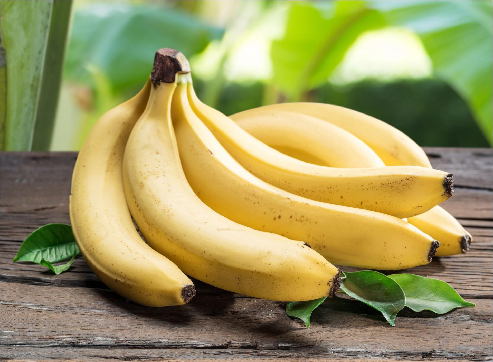

Korzyści zdrowotne bananów
- Doskonałe źródło potasu, który wspiera zdrowie serca.
- Wysoka zawartość błonnika, co pomaga w trawieniu.
- Zawierają witaminę C i B6, które wzmacniają odporność.
- Naturalnie słodkie, świetne jako zdrowa przekąska.
Wartości odżywcze bananów (na 100g)
| Składnik |
Ilość |
| Kalorie |
89 kcal |
| Białko |
1.1 g |
| Tłuszcz |
0.3 g |
| Węglowodany |
22.8 g |
| Błonnik |
2.6 g |
| Potas |
358 mg |
Galeria bananów

Świeże banany
Smaczne smoothie bananowe
Deser z bananami
Ciekawostki o bananach
- Technicznie jagoda: Banany są klasyfikowane jako jagody z botanicznego punktu widzenia.
- Naturalnie zakrzywione: Banany rosną w kierunku słońca, co powoduje ich charakterystyczne wygięcie.
- Wielkie bogactwo potasu: Banany są bogatym źródłem potasu, który wspiera pracę serca i mięśni.
- Niektóre są czerwone: Istnieje odmiana bananów o czerwonej skórce, które mają bardziej kremowy smak.
- Najczęściej jedzone owoce: Banany są jednym z najczęściej spożywanych owoców na świecie, w niektórych krajach zjada się ich więcej niż jabłek.
Cytat dnia
"Jedzenie owoców, takich jak banany, to prosty sposób na zdrowy styl życia. Zdrowie zaczyna się od talerza!" – Anonim
Zapisz się do naszego newslettera!